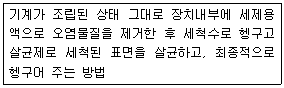
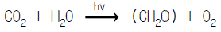

식품기사 (2004-08-08 기출문제)
1과목: 식품위생학
1. 어떤 첨가물의 LD50 의 값이 적다는 것은 어느 것을 의미하는가?
- 독성이 작다.
- 독성이 크다.
- 보존성이 작다.
- 보존성이 크다.
(정답률: 83%)

2. 유화제로서 잘 알려진 식품첨가물은?
- 구연산
- 아질산 나트륨
- 글리세린 지방산 에스테르
- 사카린
(정답률: 80%)
3. 굴, 모시조개에 의한 식중독의 독성분은?
- 삭시톡신(saxitoxin)
- 베네루핀(venerupin)
- 테트로도톡신(tetrodotoxin)
- 에르고톡신(ergotoxin)
(정답률: 72%)
4. 다음 물질 중에서 발암성과 가장 거리가 먼 것은?
- 벤조피렌
- 트리할로메탄
- 아플라톡신
- 마비성 패류독
(정답률: 83%)
5. 생성량이 비교적 많고 반감기가 길어 식품에 특히 문제가 되는 핵종만으로 된 것은?
- 131I, 137Cs
- 131I, 32P
- 129Te, 90Sr
- 137Cs, 90Sr
(정답률: 84%)
6. 다음 중 이질균은?
- Salmonella
- Shigella
- Staphylococcus
- Clostridium
(정답률: 84%)
7. 다음 기생충과 그의 중간 숙주와의 관계를 나타낸 것 중 연결이 잘못된 것은?
- 간흡충 - 붕어
- 폐흡충 - 가재
- 유구조충 - 돼지
- 광절열두조충 - 양
(정답률: 75%)
8. 바다생선회를 원인식으로 발생한 환자를 조사한 결과 기생충의 자충이 원인이었다고 한다면 어느 기생충과 관련이 깊은가?
- 선모충
- 동양모양선충
- 간흡충
- 아니사키스충
(정답률: 89%)
9. 유연 포장재료 중 고분자물질인 셀로판의 성질에 대한 설명으로 틀린 것은?
- 일반적으로 독성이 없다.
- 표면의 광택과 색채의 투명성이 대단히 좋다.
- 대전성이 있어서 먼지 같은 것을 잘 흡착하며 증기의 투과성이 적다.
- 열접착성과 내수성, 인열저항이 적다.
(정답률: 48%)
10. BGLB(Brilliant green lactose bile) 배지가 주로 이용되는 시험은?
- 대장균군(coliform group)의 확정 및 완전시험
- 장구균(enterococcus)의 정량적 시험
- 대장균군의 추정시험
- 아플라톡신을 생산하는 균의 검사
(정답률: 77%)
11. 다음 중 바르게 연결된 것은?
- 감자 - 무스카린(muscarine)
- 면실유 - 고시폴(gossypol)
- 수수 - 아미그달린(amygdalin)
- 독미나리 - 에르고톡신(ergotoxin)
(정답률: 88%)
12. 원유검사 방법과 거리가 먼 것은?
- Babcock test
- Resazurin reduction test
- Methylene blue reduction test
- Gutzeit method
(정답률: 58%)
13. 다음과 같은 특성을 갖는 식품 기계장치의 세정 방법은?

- 분해 세정법
- CIP 법(cleaning in place)
- HACCP 법
- Clean room 법
(정답률: 91%)
14. 다음 물질 중 소독효력이 거의 없는 것은?
- 역성비누
- 크레졸 비누액
- 중성세제
- 승홍
(정답률: 62%)
15. 식품 첨가물 중 보존료와 관계 없는 것은?
- 안식향산
- 차아염소산나트륨
- 소르빈산
- 데히드로초산
(정답률: 69%)
16. 식품 중의 단백질, 탄수화물 및 지질 등의 식품성분이 미생물의 작용으로 분해되어 악취와 유해물질을 생성하여 식품 가치를 잃어버리는 현상은?
- 발효
- 부패
- 변패
- 열화
(정답률: 75%)
17. Sodium L-ascorbate는 주로 어떤 목적에 이용되는가?
- 살균작용은 약하나 정균작용이 있으므로 보존료로 이용된다.
- 산화방지력이 있으므로 식용유의 산화방지 목적으로 사용된다.
- 수용성이므로 색소의 산화방지에 이용된다.
- 영양 강화의 목적에 적합하다.
(정답률: 59%)
18. 식품공장에서 미생물 수의 감소 및 오염물질 제거 목적으로 사용하는 위생처리제가 아닌 것은?
- Hypochlorite
- Chlorine dioxide
- 제 4급 암모늄 화합물
- Ascorbic acid
(정답률: 83%)
19. 어패류의 부패에 관련된 설명으로 옳은 것은?
- 일반적으로 백색육 생선은 적색육 생선보다 부패 속도가 빠르다.
- 스트레스 등의 치사조건은 어패류의 사후 품질에 영향을 주지 않는다.
- 굴의 부패속도가 느린 것은 다량 포함된 glycogen이 젖산으로 분해되어 산성 pH가 오래 유지되기 때문이다.
- 일반적으로 부패세균은 산성 영역에서 잘 증식하므로 어패류의 산도는 부패속도 추정의 좋은 요소이다.
(정답률: 70%)
20. 복어독(tetrodotoxin)의 설명으로 바르지 않는 것은?
- 단백질성 독소중에서 독력이 가장 강함
- 불수용성-내열성-빛에 안정-알칼리에 약함
- 부위별로 독소농도가 달라 난소나 간에 많고 근육에서는 거의 없음
- 자율운동신경계를 차단하여 마비증상을 일으켜 사망에 이르게 함
(정답률: 29%)
2과목: 식품화학
21. 밀가루의 이화학적 특성으로 맞게 설명한 것은?
- 밀가루의 단백질은 글루타민이다.
- 라이신(lysine), 메티오닌(methionine) 등의 아미노산이 부족하여 영양학적으로 불완전하다.
- 표백제의 사용으로 카로티노이드 계통의 색소가 제거되면 안토시아닌계 색소만 남는다.
- 박력분은 단백질의 함량이 12 % 이상이다.
(정답률: 59%)
22. 클로로필(chlorophyll)에 강산을 작용시켰을 때 생성되는 물질은?
- Pheophytin
- Pheophorbide
- Chlorin
- Methyl chlorophyllide
(정답률: 35%)
23. 식품가공 중에 생성되는 독성물질이 아닌 것은?
- 니트로사민
- 라이시노알라닌
- 벤조피렌
- 라이코펜
(정답률: 83%)
24. 식이섬유에 대한 설명 중 가장 옳지 않은 것은?
- 식이섬유에는 리그닌(lignin), 셀룰로오스(cellulose), 펙틴(pectin), 헤미셀룰로오스(hemicellulose) 등이 포함된다.
- 식이섬유는 일반적으로 Ca++, Zn++ 등의 중요한 무기물 뿐만 아니라 Cd++, Hg++ 등의 독성 무기물과도 결합하여 흡수를 저해한다.
- 리그닌과 대부분의 셀룰로오스는 발효되지 않고 변으로 배설되기 때문에 식사중에 식이섬유의 양이 증가하면 변의 양도 증가한다.
- 식이섬유는 여러 가지 건강증진효과를 지니기 때문에 필요 이상 많이 섭취해도 건강에 좋다.
(정답률: 77%)
25. 비타민(Vitamin) B6는 다음의 어느 영양소와 가장 관계가 깊은가?
- 인지질
- 전분
- 무기질
- 단백질
(정답률: 35%)
26. 검정콩은 장 이완작용, 신장이나 간장의 강화작용, 고혈압이나 동맥경화 개선작용, 해열이나 해독작용, 피로회복작용 등의 생리활성을 지니는 것으로 알려져 있다. 다음중 검정콩의 생리활성 성분과 가장 거리가 먼 것은?
- Isoflavone
- Daidzin
- Saponin
- Mineral
(정답률: 38%)
27. 전단응력이 전단속도에 정비례하는 형태의 뉴톤 유체(Newtonian fluid)가 아닌 것은 어느 것인가?
- 홍차
- 맥주
- 우유
- 토마토케찹
(정답률: 85%)
28. 매운 맛과 관계가 없는 것은?
- 아민류
- P 화합물
- S 화합물
- 벤젠 핵을 가진 화합물
(정답률: 41%)
29. 식육의 풍미(flavor)는 어떤 반응에 의하여 최초로 생기게 되는가?
- 탈탄산 반응
- 아미노-카르보닐 반응
- 아미노전이 반응
- 인산화 반응
(정답률: 56%)
30. 염기성 아미노산은 어떤 것인가?
- 글루탐산(glutamic acid)
- 아스파르트산(aspartic acid)
- 아르기닌(arginine)
- 글리신(glycine)
(정답률: 44%)
31. 고추, 토마토와 같은 식품의 적색은 주로 어떤 색소에 의하여 나타나는가?
- 플라보노이드
- 카로티노이드
- 클로로필
- 안토시안
(정답률: 64%)
32. 거품과 관련된 설명 중 틀린 것은?
- 맥주와 샴페인은 가압하에서 탄산가스를 다량 용해시킨 것이다.
- 액체 중에 공기와 같은 기체가 분산된 것이 거품이다.
- 빵이나 카스텔라는 거품을 이용하여 부드러운 식감을 지니게 한 것이다.
- 거품을 제거하기 위해서는 거품의 표면장력을 높여주어야 한다.
(정답률: 78%)
33. 성인 1일 총에너지 소요량의 근원이 되지 않는 것은?
- 활동 대사량
- 식품의 특이동적작용
- 성장 대사량
- 기초 대사량
(정답률: 46%)
34. 알콜을 첨가했을 때 응고 침전되는 성질을 이용하는 것은?
- 우유의 신선도 측정
- 요구르트 제조
- 아이스크림 제조
- 치즈 제조
(정답률: 62%)
35. 심한 운동을 할 때 숨이 차서 많은 양의 산소를 충분히 공급하여 주지 못하면서 해당 작용 과정을 통하여 생성되는 물질이 있다면 이 물질은 무엇인가?
- 젖산
- 글루콘산
- 구연산
- 인산
(정답률: 77%)
36. 최근 숙성육(냉장육)의 소비가 급격히 증가하고 있다. 육의 숙성과정 중에 일반적으로 발생하는 문제점이라고 보기 가장 어려운 것은?
- 육색의 변화
- 육단백질의 변화
- 수분의 손실로 인한 감량
- 미생물의 번식
(정답률: 38%)
37. 전분의 노화현상 방지책이 아닌 것은?
- 냉장고에 저장한다.
- 설탕을 첨가한다.
- 빙점 이하에서 수분 함량을 15 % 이하로 억제한다.
- 유화제를 사용한다.
(정답률: 45%)
38. 요오드 반응이 무색으로 나타나는 것은?
- 아밀로펙틴(amylopectin)
- 아밀로덱스트린(amylodextrin)
- 에리트로덱스트린(erythrodextrin)
- 말토텍스트린(maltodextrin)
(정답률: 27%)
39. 식품의 조직감 중 국수의 반죽처럼 길게 늘어나는 신전성을 측정하는 장치로 이용되고 있는 것은?
- 익스텐소그래프(extensograph)
- 점도계(viscometer)
- 패리노그래프(farinograph)
- 아밀로그래프(amylograph)
(정답률: 81%)
40. 만유론산(mannuronic acid)이 주성분인 다당류는?
- 한천(agar - agar)
- 알긴산(alginic acid)
- 펙틴(pectin)
- 글리코겐(glycogen)
(정답률: 64%)
3과목: 식품가공학
41. 템페(tempeh)의 설명과 다른 것은?
- Bacillus natto 에 의하여 만들어진다.
- 인도네시아의 전통 발효식품으로 시작되었다.
- 증자한 콩을 바나나 잎에 포장하여 2∼3일 발효시켜 얻는다.
- Rhizopus 속의 곰팡이에 의하여 만들어진다.
(정답률: 62%)
42. 상업적 살균법을 가장 잘 설명한 것은?
- 고온살균을 말한다.
- 저온살균을 말한다.
- 식품공업에서 제품의 유통기간을 감안하여 문제가 발생하지 않을 수준으로 처리하는 부분살균을 말한다.
- 간헐살균을 말한다.
(정답률: 75%)
43. 식품공학의 기본적인 이론을 설명한 것 중 틀린 것은?
- 식품가공공정에서 에너지 수지식은 열역학 제 1법칙인 에너지보존의 법칙이 적용된다.
- 투입된 에너지는 떠나는 에너지와 축적된 에너지의 합과 같다.
- 비열은 식품의 품온을 Δ t 만큼 상승시키는데 소요되는 열량을 말한다.
- 식품의 엔탈피는 항상 일정하다.
(정답률: 65%)
44. 샐러드유(salad oil)의 특성과 거리가 먼 것은?
- 불포화 결합에 수소를 첨가한다.
- 색과 냄새가 없다.
- 저장 중에 산패에 의한 풍미의 변화가 적다.
- 저온에서 혼탁하거나 굳어지지 않는다.
(정답률: 63%)
45. 의사 가소성유동(pseudo-plastic flow)을 나타내는 물질은?
- 밀가루 반죽
- 전분젤(starch gel)
- 20% 설탕용액
- 과실퓨레(fruit puree)
(정답률: 42%)
46. 계란 중 콜레스테롤 함량을 낮게 하는 방법으로 부적당한 것은?
- 난황으로부터 콜레스테롤을 용매 추출한다.
- 사료의 배합을 조절하여 계란에 콜레스테롤 함량이 낮도록 한다.
- 계란을 가열처리 한다.
- 난백과 난황을 분리하여 난황에 있는 지방을 제거한다.
(정답률: 74%)
47. 가당연유의 살균 목적이 아닌 것은?
- 미생물 살균, 효소를 파괴하기 위해
- 첨가한 설탕의 완전한 용해를 시키기 위해
- 농축시 가열면의 우유가 늘어붙는 것을 방지하여 증발이 신속히 되게 위해
- 단백질에 적당한 열변성을 주어서 제품의 농후화를 촉진시키기 위해
(정답률: 58%)
48. 감의 탈삽법(脫澁法)으로 가장 좋은 것은?
- 온수법
- 알콜법
- 탄산법
- 알데히드법
(정답률: 34%)
49. 통조림에서 탁음이 나는 원인이 아닌 것은?
- 탈기 불충분
- 관내부 가스발생
- 내용물의 연화
- 기온, 기압의 변화
(정답률: 58%)
50. 육가공 제조시 필요한 기구 및 설비가 아닌 것은?
- 세절기
- 유화기
- 혼합기
- 균질기
(정답률: 43%)
51. 유지(油脂)의 정제 방법이 아닌 것은?
- 탈산(脫酸)
- 탈염(脫鹽)
- 탈색(脫色)
- 탈취(脫臭)
(정답률: 73%)
52. 통조림의 뚜껑에 있는 익스팬션 링(Expansion ring)의 주 역할은?
- 상하의 구별을 쉽게 하기 위함이다.
- 충격에 견딜 수 있게 하기 위함이다.
- 밀봉시 관통과의 결합을 쉽게 하기 위함이다.
- 내압의 완충 작용을 하기 위함이다.
(정답률: 78%)
53. 아미노산 간장의 제조과정에서 "중화" 에 대한 설명 중 틀린 것은?
- 단백질 분해가 끝난 분해액에 NaOH의 포화용액으로 중화시킨다.
- 단백질 분해가 끝난 분해액에 Na2CO3의 분말을 표면에 조금씩 뿌리면서 교반하여 CO2 의 발생이 없을 때까지 계속한다.
- 중화의 최적 pH는 7.5이며, 이 때 휴민(humin) 물질을 제거하여 빛깔과 투명도가 좋아진다.
- 중화 온도가 너무 높으면 쓴맛이 생기므로 60℃ 이하에서 중화시켜야 한다.
(정답률: 26%)
54. 이성화당을 설명한 것으로 틀린 것은?
- 설탕과 같은 단맛을 가지며, 용해도가 높고 분자량이 작으므로 삼투압이 높은 성질이 있다.
- 삼투압이 설탕보다 높기 때문에 미생물에 대한 안정성과 잼, 젤리 등의 저장성 향상 등을 위한 목적으로 사용할 수 있다.
- 음료제품, 유가공품, 제과, 아이스크림 등에 사용되고 있다.
- 인체의 유용 장내세균인 비피더스(Bifidus)균을 증식시키는 증식인자로 알려져 있다.
(정답률: 57%)
55. 추출법(抽出法)에 의한 제유(製油)시 추출에 가장 많이 쓰는 용제는?
- 헵탄(heptane)
- 핵산(hexane)
- 벤젠(benzene)
- 에테르(ether)
(정답률: 73%)
56. 식품을 급속히 냉동시켰을 때 생성된 얼음 결정의 크기는 어떻게 변하게 되겠는가?
- 다수의 큰 얼음결정이 생성됨
- 다수의 작은 얼음결정이 생성됨
- 소수의 큰 얼음결정이 생성됨
- 소수의 작은 얼음결정이 생성됨
(정답률: 60%)
57. 전분유(澱粉乳)에서 전분입자를 분리하는 방법이 아닌 것은?
- 탱크 침전식
- 테이블 침전식
- 원심 분리식
- 진공 농축식
(정답률: 73%)
58. 쇠고기를 갈아 둥근 구형으로 만든 덩어리가 송풍식으로 냉동되고 있다. 쇠고기의 온도는 빙점까지 냉각되어 있으며 송풍공기의 온도는 -20℃이다. 쇠고기 덩어리는 지름 8 ㎝, 밀도 1000 ㎏/m3· K이며, 빙점은 -1.25℃이고 융해 잠열은 250 kJ/㎏ 이다. 송풍공기의 대류열전달계수는 50 W/m2· K이고 냉동된 쇠고기의 열전도도는 1.2 W/m· K 이다. Plank 방정식(구형물체의 P값은 1/6, R값은 1/24를 적용)을 이용하여 냉동시간은 얼마인가?
- 1.04 h
- 1.81 h
- 2.⑤1 h
- 4.01 h
(정답률: 60%)
59. 젤리 응고에 관여하지 않는 물질은?
- 산(酸)
- 단백질
- 펙틴질
- 당분
(정답률: 83%)
60. 밀가루 반죽(Dough)의 탄력성과 안정성을 측정하고 기록하는 기기는?
- Farinograph
- Consistometer
- Amylograph
- Extensograph
(정답률: 50%)
4과목: 식품미생물학
61. 다음 곰팡이속들 중 불완전균류가 아닌 것은?
- Cladosporium 속
- Fusarium 속
- Absidia 속
- Trichoderma 속
(정답률: 42%)
62. 식품공장에서의 일반적인 파아지(phage) 예방법이 아닌 것은?
- 2종 이상의 균주 조합 계열을 만들어 2~3일마다 바꾸어 사용한다.
- 항생물질의 낮은 농도에 견디고 정상발효를 행하는 내성 균주를 사용한다.
- 공장 내의 공기를 자주 바꾸어 주거나 온도, pH 등의 환경조건을 변화시킨다.
- 공장과 주변을 청결히 하고 용기의 가열 살균, 약제 사용 등을 통한 살균을 철저히 한다.
(정답률: 73%)
63. 천자배양(穿刺培養:stab culture)에 가장 적합한 것은?
- 호염성균의 배양
- 호열성균의 배양
- 호기성균의 배양
- 혐기성균의 배양
(정답률: 76%)
64. 출아법(Budding)으로 증식하지 않는 효모는?
- Saccharomyces 속
- Endomycopsis 속
- Hanseniaspora 속
- Schizosaccharomyces 속
(정답률: 48%)
65. 통조림의 flat sour에 대한 설명으로 옳지 않은 것은?
- 관은 정상이지만 내용물은 젖산 생성 때문에 신맛이 생성된다.
- 채소통조림이나 수산통조림 등 산도가 낮은 식품에서 주로 발생한다.
- 유포자 호열성세균에 의한 경우가 많다.
- 과도한 탄산가스 생성이 수반된다.
(정답률: 67%)
66. 항생물질과 그 항생물질의 생산에 이용되는 균이 아닌 것은?
- Penicillin - Penicillium chrysogenum
- Streptomycin - Streptomyces aureus
- Teramycin - Streptomyces rimosus
- Chlorotetracycline - Streptomyces aureofaciens
(정답률: 33%)
67. 효모균의 동정(同定)과 관계 없는 것은?
- 포자의 유무와 모양
- 라피노스(raffinose) 이용성
- 편모염색
- 피막형성
(정답률: 57%)
68. 맥주 발효시 상면발효효모와 하면발효효모의 예로 옳은 것은?
- 상면발효효모 - Saccharomyces carlsbergensis
하면발효효모 - Saccharomyces cerevisiae - 상면발효효모 - Saccharomyces cerevisiae
하면발효효모 - Saccharomyces carlsbergensis - 상면발효효모 - Saccharomyces rouxii
하면발효효모 - Saccharomyces cerevisiae - 상면발효효모 - Saccharomyces ellipsoideus
하면발효효모 - Saccharomyces cerevisiae
(정답률: 77%)
69. 다음 중 무포자 효모는?
- Saccharomyces cerevisiae
- Schizosaccharomyces pombe
- Candida utilis
- Zygosaccharomyces rouxii
(정답률: 43%)
70. 고에너지 결합(high energy bond)을 이용하여 두분자를 결합시키는 효소는?
- reductase
- lyase
- ligase
- hydrolase
(정답률: 59%)
71. 담자균류의 특징과 관계가 없는 것은?
- 담자기(basidium)
- 담자포자
- 자낭포자
- 주름살(gills)
(정답률: 70%)
72. 효모의 미세구조를 볼 때 효모와 관련 없는 부분은?
- 공포(액포)가 있다.
- 핵은 핵막으로 둘려 쌓여있다.
- 핵섬유와 핵부위가 있다.
- 막조직이 있다.
(정답률: 34%)
73. 박테리오파아지(Bacteriophage)의 설명 중 틀린 것은?
- 숙주(宿主)로 되는 균이 한정되어 있지 않다.
- 기생증식하면서 용균(溶菌)하는 Virus체이다.
- 머리는 DNA, 꼬리는 단백질로 구성되어 있다.
- 독성(virulent)과 온화(temperate) phage로 대별 한다.
(정답률: 57%)
74. 편성혐기성균의 특징이 아닌 것은?
- 유리산소가 없을 때만 생육한다.
- cytochrome계 효소가 없다.
- 고층한천 배양기의 저부에서만 생육한다.
- catalase 양성이다.
(정답률: 47%)
75. 영양요구변이주(auxotroph)의 검출 방법이 아닌 것은?
- Replica법
- 농축법
- 여과농축법
- 융합법
(정답률: 75%)
76. 붉은 색소를 생성하며 빵, 육류, 우유 등에 번식하여 빨간 색으로 변하게 하는 것은?
- Serratia 속
- Escherichia 속
- Pseudomonas 속
- Lactobacillus 속
(정답률: 62%)
77. 원핵세포 구조를 하고 있는 것은?
- 곰팡이(Mold)
- 효모(Yeast)
- 세균(Bacteria)
- 박테리오파아지(Bacteriophage)
(정답률: 71%)
78. 대장균 O157:H7 이라는 균의 명칭 중 O와 H의 설명에 해당하는 것은?
- O : 체성항원, H : 편모항원
- O : 편모항원, H : 체성항원
- O : 협막항원, H : Vi 항원
- O : Vi 항원, H : 협막항원
(정답률: 56%)
79. 부패된 통조림에서 균을 분리하여 시험을 실시하였더니 유당(lactose)을 발효하였다. 어떤 균인가?
- Proteus morganii
- Salmonella typhosa
- Pseudomonas fluorescens
- Escherichia coli
(정답률: 55%)
80. 혐기성 미생물이 산소가 전혀 없는 조건에서 다음의 화합물 중 어떤 것으로부터 전자전달체로 이용하여 생육할 수 있는가?
- CaCO3
- NaNO3
- NaSO3
- KH2PO4
(정답률: 27%)
5과목: 생화학 및 발효학
81. 다음 중 제조방법에 따라 병행복 발효주에 속하는 것은?
- 맥주
- 약주
- 사과주
- 위스키
(정답률: 57%)
82. 탄소원으로 포도당을 이용한 구연산발효의 보충경로의 효소가 아닌 것은?
- PEP carboxylase
- PEP carboxykinase
- Citrate synthase
- Pyruvate carboxylase
(정답률: 26%)
83. 초산(acetic acid) 발효에 적합한 생산균주는?
- Lactobacillus
- Gluconobacter
- Aspergillus
- Candida
(정답률: 25%)
84. 핵산에 대한 설명으로 옳은 것은?
- DNA 이중나선에서 아데닌(adenine)과 티민(thymine)은 3개의 수소결합으로 연결되어 있다.
- B-DNA의 사슬은 왼손잡이 이중나선구조를 갖고 있다.
- RNA는 알칼리 용액에서 가열하면 빠르게 분해된다.
- RNA의 이중나선은 각 가닥의 방향이 서로 반대이다.
(정답률: 45%)
85. 비오틴(biotin) 함량이 과량인 배지를 사용하여 Corynebacterium glutamicum 으로 글루탐산(glutamic acid)을 발효시키려 할 때 맞는 것은?
- 발효 도중에 페니실린(penicillin)을 배지에 첨가 한다.
- 발효가 끝난 다음 페니실린(penicillin)을 배지에 가한다.
- 비오틴(biotin) 함량이 과량 포함된 배지를 그대로 사용할 수 있다.
- 비오틴(biotin) 함량은 글루탐산(glutamic acid) 발효에 아무런 영향을 미치지 않는다.
(정답률: 56%)
86. 포도당으로부터 고과당 물엿을 생산하는데 이용되는 효소는?
- glucoamylase
- glucose isomerase
- glucose oxidase
- glycosyl transferase
(정답률: 79%)
87. 에너지방출은 어느 과정에서 일어나는가?
- 근육작용
- 소화작용
- 흡수작용
- 호흡작용
(정답률: 67%)
88. 연속배양의 장점에 관한 설명 중 틀린 것은?
- 발효장치의 용량을 줄일 수 있다.
- 발효시간이 단축된다.
- 생산비를 절약할 수 있다.
- 잡균의 오염을 막을 수 있다.
(정답률: 59%)
89. 광합성 과정은 명반응과 암반응으로 구분된다. 암반응 과정에서 주로 일어나는 현상은?
- 포도당 합성
- NADP의 환원
- ATP의 합성
- 전자전달계의 활성화
(정답률: 37%)
90. 식물의 광합성 과정에서 탄수화물에 존재하는 산소 원자는 어디에서 공급된 것인가?

- CO2
- H2O
- O2
- CO2, H2O, O2
(정답률: 57%)
91. 비타민 B12 는 코발트를 함유하는 빨간색 비타민으로 미생물이 자연계의 유일한 공급원인데 그 미생물은 무엇인가?
- 곰팡이(Fungi)
- 효모(Yeast)
- 세균(Bacteria)
- 바이러스(Virus)
(정답률: 34%)
92. 라이신(lysine) 직접 발효시 변이주를 이용하는 경우 변이주가 아닌 것은?
- 영양요구성 변이주
- Threonine, methionine 감수성 변이주
- Lysine analog 내성 변이주
- Biotin 요구주
(정답률: 49%)
93. 단백질 가수분해 효소가 아닌 것은?
- 트립신(trypsin)
- 펩신(pepsin)
- 파파인(papain)
- 카제인(casein)
(정답률: 58%)
94. 호기성 미생물을 사용하여 균체를 다량 생산하고자 할 때 많은 양의 배지를 사용한다. 가장 적당한 배양 방법은?
- 정치배양법
- 진탕배양법
- 사면배양법
- 통기교반배양법
(정답률: 60%)
95. 퓨린(purine)을 생합성할 때 purine의 골격을 구성하는데 필요한 물질이 아닌 것은?
- alanine
- aspartic acid
- CO2
- THF
(정답률: 26%)
96. 효모생산의 배양관리 중 가장 부적당한 것은?
- 배양 중 포말(formal) 도수, 온도, pH 등을 측정한다.
- pH는 3.5 ~ 4.5 범위에서 안정하다.
- 배양 온도는 일반적으로 50℃이다.
- 매분 배양액의 약 1/10량의 공기를 통기한다.
(정답률: 68%)
97. 단백질자원으로서 효모균체의 제조에서 해당사항이 아닌 것은?
- 효모의 균체제조의 경우도 알콜 발효의 경우와 같이 혐기적 발효이다.
- 배양 과정에서 다량의 거품의 발생을 수반하지 않기 위하여 Waldhof 발효조가 쓰인다.
- 탄소원으로 쓰이는 당밀은 품질이 양호하지만 고가이므로 주로 빵효모 제조에 쓰인다.
- 아황산 펄프폐액을 원료로서 사용할 때에는 아황산을 SO2로서 제거하고 사용한다.
(정답률: 26%)
98. 다음 효소 중에서 전분의 α -1.6-glucoside 결합을 가수 분해하는 것은?
- α - amylase
- cellulase
- β - amylase
- glucoamylase
(정답률: 49%)
99. 구연산 발효시 당질 원료 대신 이용할 수 있는 유용한 기질은?
- n-paraffin
- ethanol
- acetic acid
- acetaldehyde
(정답률: 57%)
100. RNA를 가수분해하는 효소는?
- ribonuclease
- polymerase
- deoxyribonuclease
- ribonucleotidyl transferase
(정답률: 66%)